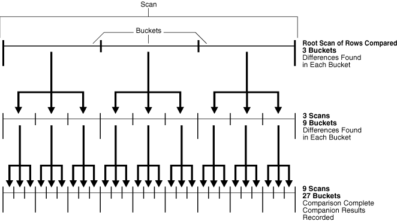
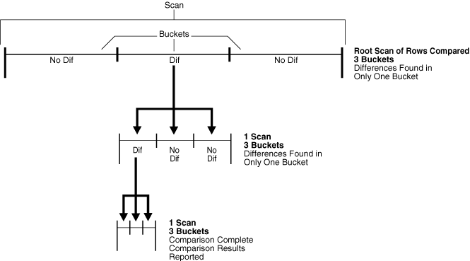

13 Comparing and Converging Data
This chapter contains instructions for comparing and converging data in database objects at two different databases using the DBMS_COMPARISON package. It also contains instructions for managing comparisons after they are created and for querying data dictionary views to obtain information about comparisons and comparison results.
This chapter contains these topics:
-
Diverging a Database Object at Two Databases to Complete Examples
-
Viewing Information About Comparisons and Comparison Results
-
Using DBMS_COMPARISON in an Oracle Streams Replication Environment
See Also:
Oracle Database PL/SQL Packages and Types Reference for more information about the DBMS_COMPARISON package
13.1 About Comparing and Converging Data
The DBMS_COMPARISON package enables you to compare database objects at different databases and identify differences in them. This package also enables you to converge the database objects so that they are consistent at different databases. Typically, this package is used in environments that share a database object at multiple databases. When copies of the same database object exist at multiple databases, the database object is a shared database object.
Shared database objects might be maintained by data replication. For example, materialized views or Oracle Streams components might replicate the database objects and maintain them at multiple databases. A custom application might also maintain shared database objects. When a database object is shared, it can diverge at the databases that share it. You can use the DBMS_COMPARISON package to identify differences in the shared database objects. After identifying the differences, you can optionally use this package to synchronize the shared database objects.
The DBMS_COMPARISON package can compare the following types of database objects:
-
Tables
-
Single-table views
-
Materialized views
-
Synonyms for tables, single-table views, and materialized views
Database objects of different types can be compared and converged at different databases. For example, a table at one database and a materialized view at another database can be compared and converged with this package.
You create a comparison between two database objects using the CREATE_COMPARISON procedure in the DBMS_COMPARISON package. After you create a comparison, you can run the comparison at any time using the COMPARE function. When you run the COMPARE function, it records comparison results in the appropriate data dictionary views. Separate comparison results are generated for each execution of the COMPARE function.
13.1.1 Scans
Each time the COMPARE function is run, one or more new scans are performed for the specified comparison. A scan checks for differences in some or all of the rows in a shared database object at a single point in time. The comparison results for a single execution of the COMPARE function can include one or more scans. You can compare database objects multiple times, and a unique scan ID identifies each scan in the comparison results.
13.1.2 Buckets
A bucket is a range of rows in a database object that is being compared. Buckets improve performance by splitting the database object into ranges and comparing the ranges independently. Every comparison divides the rows being compared into an appropriate number of buckets. The number of buckets used depends on the size of the database object and is always less than the maximum number of buckets specified for the comparison by the max_num_buckets parameter in the CREATE_COMPARISON procedure.
When a bucket is compared using the COMPARE function, the following results are possible:
-
No differences are found. In this case, the comparison proceeds to the next bucket.
-
Differences are found. In this case, the comparison can split the bucket into smaller buckets and compare each smaller bucket. When differences are found in a smaller bucket, the bucket is split into still smaller buckets. This process continues until the minimum number of rows allowed in a bucket is reached. The minimum number of rows in a bucket for a comparison is specified by the
min_rows_in_bucketparameter in theCREATE_COMPARISONprocedure.When the minimum number of rows in a bucket is reached, the
COMPAREfunction reports whether there are differences in the bucket. TheCOMPAREfunction includes theperform_row_difparameter. This parameter controls whether theCOMPAREfunction identifies each row difference in a bucket that has differences. When this parameter is set toTRUE, theCOMPAREfunction identifies each row difference. When this parameter is set toFALSE, theCOMPAREfunction does not identify specific row differences. Instead, it only reports that there are differences in the bucket.
You can adjust the max_num_buckets and min_rows_in_bucket parameters in the CREATE_COMPARISON procedure to achieve the best performance when comparing a particular database object. After a comparison is created, you can view the bucket specifications for the comparison by querying the MAX_NUM_BUCKETS and MIN_ROWS_IN_BUCKET columns in the DBA_COMPARISON data dictionary view.
The DBMS_COMPARISON package uses the ORA_HASH function on the specified columns in all the rows in a bucket to compute a hash value for the bucket. If the hash values for two corresponding buckets match, then the contents of the buckets are assumed to match. The ORA_HASH function is an efficient way to compare buckets because row values are not transferred between databases. Instead, only the hash value is transferred.
Note:
If an index column for a comparison is a VARCHAR2 or CHAR column, then the number of buckets might exceed the value specified for the max_num_buckets parameter.
See Also:
-
Oracle Database SQL Language Reference for more information about the
ORA_HASHfunction -
Oracle Database PL/SQL Packages and Types Reference for information about index columns
13.1.3 Parent Scans and Root Scans
Each time the COMPARE function splits a bucket into smaller buckets, it performs new scans of the smaller buckets. The scan that analyzes a larger bucket is the parent scan of each scan that analyzes the smaller buckets into which the larger bucket was split. The root scan in the comparison results is the highest level parent scan. The root scan does not have a parent. You can identify parent and root scan IDs by querying the DBA_COMPARISON_SCAN data dictionary view.
You can recheck a scan using the RECHECK function, and you can converge a scan using the CONVERGE procedure. When you want to recheck or converge all of the rows in the comparison results, specify the root scan ID for the comparison results in the appropriate subprogram. When you want to recheck or converge a portion of the rows in comparison results, specify the scan ID of the scan that contains the differences.
For example, a scan with differences in 20 buckets is the parent scan for 20 additional scans, if each bucket with differences has more rows than the specified minimum number of rows in a bucket for the comparison. To view the minimum number of rows in a bucket for the comparison, query the MIN_ROWS_IN_BUCKET column in the DBA_COMPARISON data dictionary view.
See Also:
Oracle Database Reference for information about the views related to the DBMS_COMPARISON package
13.1.4 How Scans and Buckets Identify Differences
This section describes two different comparison scenarios to show how scans and buckets identify differences in shared database objects. In each scenario, the max_num_buckets parameter is set to 3 in the CREATE_COMPARISON procedure. Therefore, when the COMPARE or RECHECK function is run for the comparison, the comparison uses a maximum of three buckets in each scan.
Figure 13-1 shows the first scenario.
Figure 13-1 Comparison with max_num_buckets=3 and Differences in Each Bucket of Each Scan
Description of "Figure 13-1 Comparison with max_num_buckets=3 and Differences in Each Bucket of Each Scan"
Figure 13-1 shows a line that represents the rows being compared in the shared database object. This figure illustrates how scans and buckets are used to identify differences when each bucket used by each scan has differences.
With the max_num_buckets parameter set to 3, the comparison is executed in the following steps:
-
The root scan compares all of the rows in the current comparison. The root scan uses three buckets, and differences are found in each bucket.
-
A separate scan is performed on the rows in each bucket that was used by the root scan in the previous step. The current step uses three scans, and each scan uses three buckets. Therefore, this step uses a total of nine buckets. Differences are found in each bucket. In Figure 13-1, arrows show how each bucket from the root scan is split into three buckets for each of the scans in the current step.
-
A separate scan is performed on the rows in each bucket used by the scans in Step 2. This step uses nine scans, and each scan uses three buckets. Therefore, this step uses a total of 27 buckets. In Figure 13-1, arrows show how each bucket from Step 2 is split into three buckets for each of the scans in the current step.
After Step 3, the comparison results are recorded in the appropriate data dictionary views.
Figure 13-2 shows the second scenario.
Figure 13-2 Comparison with max_num_buckets=3 and Differences in One Bucket of Each Scan
Description of "Figure 13-2 Comparison with max_num_buckets=3 and Differences in One Bucket of Each Scan"
Figure 13-2 shows a line that represents the rows being compared in the shared database object. This figure illustrates how scans and buckets are used to identify differences when only one bucket used by each scan has differences.
With the max_num_buckets parameter set to 3, the comparison is executed in the following steps:
-
The root scan compares all of the rows in the current comparison. The root scan uses three buckets, but differences are found in only one bucket.
-
A separate scan is performed on the rows in the one bucket that had differences. This step uses one scan, and the scan uses three buckets. Differences are found in only one bucket. In Figure 13-2, arrows show how the bucket with differences from the root scan is split into three buckets for the scan in the current step.
-
A separate scan is performed on the rows in the one bucket that had differences in Step 2. This step uses one scan, and the scan uses three buckets. In Figure 13-2, arrows show how the bucket with differences in Step 2 is split into three buckets for the scan in the current step.
After Step 3, the comparison results are recorded in the appropriate data dictionary views.
Note:
This section describes scenarios in which the max_num_buckets parameter is set to 3 in the CREATE_COMPARISON procedure. This setting was chosen to illustrate how scans and buckets identify differences. Typically, the max_num_buckets parameter is set to a higher value. The default for this parameter is 1000. You can adjust the parameter setting to achieve the best performance.
13.2 Other Documentation About the DBMS_COMPARISON Package
The chapter about the DBMS_COMPARISON package in the Oracle Database PL/SQL Packages and Types Reference contains advanced conceptual information about the package and detailed information about the subprograms in the package, including:
-
Requirements for using the package
-
Descriptions of constants used in the package
-
Descriptions of each subprogram in the package and its parameters
13.3 Quick Start: A Simple Compare and Converge Scenario
This section describes a simple scenario that compares and converges the hr.departments table. This section is designed to get you started with using the DBMS_COMPARISON package by illustrating how to compare and converge a single table.
This section contains the following topics:
13.3.1 Tutorial: Preparing to Compare and Converge Data
Suppose you share the hr.departments table in two databases. You want to compare this table at these databases to see if their data is consistent. If the tables have diverged at the two databases, then you want to converge them to make them consistent.
Meet the following prerequisites to complete this tutorial:
-
Configure network connectivity so that the two databases can communicate with each other. See Oracle Database 2 Day DBA for information about configuring network connectivity between databases.
-
Ensure that the
hrsample schema is installed on both databases.
In this example, the global names of the databases are ii1.example.com and ii2.example.com, but you can substitute any two databases in your environment that meet the prerequisites.
To prepare for comparison and convergence of the hr.departments table at the ii1.example.com and ii2.example.com databases:
-
For the purposes of this example, make the
hr.departmentstable diverge at the two databases:-
On a command line, open SQL*Plus and connect to the
ii2.example.comdatabase ashruser.See Oracle Database 2 Day DBA for more information about starting SQL*Plus.
-
Delete the department in the
hr.departmentstable with thedepartment_idequal to270:DELETE FROM hr.departments WHERE department_id=270; COMMIT;
-
Modify the data in a row in the
hr.departmentstable:UPDATE hr.departments SET manager_id=114 WHERE department_id=10; COMMIT;
-
Insert a row into the
hr.departmentstable:INSERT INTO hr.departments VALUES(280, 'Bean Counters', 108, 2700); COMMIT;
-
Exit SQL*Plus:
EXIT;
Note:
Usually, Step 1 is not required. It is included in this example to ensure that the
hr.departmentstable diverges at the two databases. -
-
Create a database link from the
ii1.example.comdatabase to theii2.example.comdatabase.The database link should connect from an administrative user in
ii1.example.comto an administrative user schema inii2.example.com. The administrative user at both databases should have the necessary privileges to access and modify thehr.departmentstable and the necessary privileges to run subprograms in theDBMS_COMPARISONpackage. If you are not sure which user has these privileges, then useSYSTEMuser. Also, both the name and the service name of the database link must beii2.example.com. See "Configuring Network Connectivity and Database Links" for more information.
See Also:
Oracle Database PL/SQL Packages and Types Reference for detailed information about the DBMS_COMPARISON package
13.3.2 Tutorial: Comparing Data in Two Different Databases
This example continues the scenario described in "Tutorial: Preparing to Compare and Converge Data". Complete the steps in that topic before continuing.
You can use the CREATE_COMPARISON procedure in the DBMS_COMPARISON package to define a comparison of a shared database object at two different databases. Once the comparison is defined, you can use the COMPARE function in this package to compare the database object specified in the comparison at the current point in time. You can run the COMPARE function multiple times for a specific comparison. Each time you run the function, it results one or more scans of the database objects, and each scan has its own scan ID.
To compare the entire hr.departments table at the ii1.example.com and ii2.example.com databases:
-
On a command line, open SQL*Plus and connect to the
ii1.example.comdatabase as the administrative user who owns the database link created in "Tutorial: Preparing to Compare and Converge Data". For example, ifSYSTEMuser owns the database link, then connect asSYSTEMuser:sqlplus system@ii1.example.com Enter password: passwordSee Oracle Database 2 Day DBA for more information about starting SQL*Plus.
-
Run the
CREATE_COMPARISONprocedure to create the comparison for thehr.departmentstable:BEGIN DBMS_COMPARISON.CREATE_COMPARISON( comparison_name => 'compare_departments', schema_name => 'hr', object_name => 'departments', dblink_name => 'ii2.example.com'); END; /Note that the name of the new comparison is
compare_departments. This comparison is owned by the user who runs theCREATE_COMPARISONprocedure. -
Run the
COMPAREfunction to compare thehr.departmentstable at the two databases:SET SERVEROUTPUT ON DECLARE consistent BOOLEAN; scan_info DBMS_COMPARISON.COMPARISON_TYPE; BEGIN consistent := DBMS_COMPARISON.COMPARE( comparison_name => 'compare_departments', scan_info => scan_info, perform_row_dif => TRUE); DBMS_OUTPUT.PUT_LINE('Scan ID: '||scan_info.scan_id); IF consistent=TRUE THEN DBMS_OUTPUT.PUT_LINE('No differences were found.'); ELSE DBMS_OUTPUT.PUT_LINE('Differences were found.'); END IF; END; / Scan ID: 1 Differences were found. PL/SQL procedure successfully completed.Specify the name of the comparison created in Step 2 for the
comparison_nameparameter.The function prints the scan ID for the comparison. The scan ID is important when you are querying data dictionary views for information about the comparison and when you are converging the database objects.
The function also prints whether differences were found in the table at the two databases:
-
If the function prints
'No differences were found', then the table is consistent at the two databases. -
If the function prints
'Differences were found', then the table has diverged at the two databases.
-
-
Make a note of the scan ID returned by the function in the previous step. In this example, assume the scan ID is
1. -
If differences were found in Step 3, then run the following query to show the number of differences found:
COLUMN OWNER HEADING 'Comparison Owner' FORMAT A16 COLUMN COMPARISON_NAME HEADING 'Comparison Name' FORMAT A20 COLUMN SCHEMA_NAME HEADING 'Schema Name' FORMAT A11 COLUMN OBJECT_NAME HEADING 'Object Name' FORMAT A11 COLUMN CURRENT_DIF_COUNT HEADING 'Differences' FORMAT 9999999 SELECT c.OWNER, c.COMPARISON_NAME, c.SCHEMA_NAME, c.OBJECT_NAME, s.CURRENT_DIF_COUNT FROM DBA_COMPARISON c, DBA_COMPARISON_SCAN s WHERE c.COMPARISON_NAME = s.COMPARISON_NAME AND c.OWNER = s.OWNER AND s.SCAN_ID = 1;Specify the scan ID you recorded in Step 4 in the
WHEREclause of the query.The output will be similar to the following:
Comparison Owner Comparison Name Schema Name Object Name Differences ---------------- -------------------- ----------- ----------- ----------- SYSTEM COMPARE_DEPARTMENTS HR DEPARTMENTS 3
-
To see which rows were different in the database object being compared, run the following query:
COLUMN COLUMN_NAME HEADING 'Index Column' FORMAT A15 COLUMN INDEX_VALUE HEADING 'Index Value' FORMAT A15 COLUMN LOCAL_ROWID HEADING 'Local Row Exists?' FORMAT A20 COLUMN REMOTE_ROWID HEADING 'Remote Row Exists?' FORMAT A20 SELECT c.COLUMN_NAME, r.INDEX_VALUE, DECODE(r.LOCAL_ROWID, NULL, 'No', 'Yes') LOCAL_ROWID, DECODE(r.REMOTE_ROWID, NULL, 'No', 'Yes') REMOTE_ROWID FROM DBA_COMPARISON_COLUMNS c, DBA_COMPARISON_ROW_DIF r, DBA_COMPARISON_SCAN s WHERE c.COMPARISON_NAME = 'COMPARE_DEPARTMENTS' AND r.SCAN_ID = s.SCAN_ID AND s.PARENT_SCAN_ID = 1 AND r.STATUS = 'DIF' AND c.INDEX_COLUMN = 'Y' AND c.COMPARISON_NAME = r.COMPARISON_NAME AND c.OWNER = r.OWNER ORDER BY r.INDEX_VALUE;In the
WHEREclause, specify the name of the comparison and the scan ID for the comparison. In this example, the name of the comparison iscompare_departmentsand the scan ID is1.The output will be similar to the following:
Index Column Index Value Local Row Exists? Remote Row Exists? --------------- --------------- -------------------- -------------------- DEPARTMENT_ID 10 Yes Yes DEPARTMENT_ID 270 Yes No DEPARTMENT_ID 280 No Yes
This output shows the index column for the table being compared and the index value for each row that is different in the shared database object. In this example, the index column is the primary key column for the
hr.departmentstable (department_id). The output also shows the type of difference for each row:-
If
LocalRowExists?andRemoteRowExists?are bothYesfor a row, then the row exists in both instances of the database object, but the data in the row is different. -
If
LocalRowExists?isYesandRemoteRowExists?isNofor a row, then the row exists in the local database object but not in the remote database object. -
If
LocalRowExists?isNoandRemoteRowExists?isYesfor a row, then the row exists in the remote database object but not in the local database object.
-
See Also:
Oracle Database PL/SQL Packages and Types Reference for detailed information about the DBMS_COMPARISON package
13.3.3 Tutorial: Converging Divergent Data
This example continues the scenario described in "Tutorial: Comparing Data in Two Different Databases". Complete the steps in that topic before continuing.
When a shared database object has diverged at two different databases, you can use the CONVERGE procedure in the DBMS_COMPARISON package to converge the two instances of the database object. After the CONVERGE procedure runs successfully, the shared database object is consistent at the two databases. To run the CONVERGE procedure, you must specify the following information:
-
The name of an existing comparison created using the
CREATE_COMPARISONprocedure in theDBMS_COMPARISONpackage -
The scan ID of the comparison that you want to converge
The scan ID contains information about the differences that will be converged. In this example, the name of the comparison is compare_departments and the scan ID is 1.
Also, when you run the CONVERGE procedure, you must specify which database "wins" when the shared database object is converged. If you specify that the local database wins, then the data in the database object at the local database replaces the data in the database object at the remote database when the data is different. If you specify that the remote database wins, then the data in the database object at the remote database replaces the data in the database object at the local database when the data is different. In this example, the local database ii1.example.com wins.
To converge divergent data in the hr.departments table at the ii1.example.com and ii2.example.com databases:
-
On a command line, open SQL*Plus and connect to the
ii1.example.comdatabase as the administrative user who owns the database link created in "Tutorial: Preparing to Compare and Converge Data". For example, if theSYSTEMuser owns the database link, then connect as theSYSTEMuser:sqlplus system@ii1.example.com Enter password: passwordSee Oracle Database 2 Day DBA for more information about starting SQL*Plus.
-
Run the
CONVERGEprocedure to converge thehr.departmentstable at the two databases:SET SERVEROUTPUT ON DECLARE scan_info DBMS_COMPARISON.COMPARISON_TYPE; BEGIN DBMS_COMPARISON.CONVERGE( comparison_name => 'compare_departments', scan_id => 1, scan_info => scan_info, converge_options => DBMS_COMPARISON.CMP_CONVERGE_LOCAL_WINS); DBMS_OUTPUT.PUT_LINE('Local Rows Merged: '||scan_info.loc_rows_merged); DBMS_OUTPUT.PUT_LINE('Remote Rows Merged: '||scan_info.rmt_rows_merged); DBMS_OUTPUT.PUT_LINE('Local Rows Deleted: '||scan_info.loc_rows_deleted); DBMS_OUTPUT.PUT_LINE('Remote Rows Deleted: '||scan_info.rmt_rows_deleted); END; / Local Rows Merged: 0 Remote Rows Merged: 2 Local Rows Deleted: 0 Remote Rows Deleted: 1 PL/SQL procedure successfully completed.
The CONVERGE procedure synchronizes the portion of the database object compared by the specified scan and returns information about the changes it made. Some scans might compare a subset of the database object. In this example, the specified scan compared the entire table. So, the entire table is synchronized, assuming no new differences appeared after the comparison scan completed.
The local table wins in this example because the converge_options parameter is set to DBMS_COMPARISON.CMP_CONVERGE_LOCAL_WINS in the procedure. That is, for the rows that are different in the two databases, the rows at the local database replace the corresponding rows at the remote database. If some rows exist at the remote database but not at the local database, then the extra rows at the remote database are deleted. If instead you want the remote database to win, then set the converge_options parameter to DBMS_COMPARISON.CMP_CONVERGE_REMOTE_WINS in the procedure.
In addition, if you run the CONVERGE procedure on a shared database object that is part of an Oracle Streams replication environment, then you might not want the changes made by the procedure to be replicated to other databases. In this case, you can set the following parameters in the CONVERGE procedure to values that will prevent the changes from being replicated:
-
local_converge_tag -
remote_converge_tag
When one of these parameters is set to a non-NULL value, a tag is set in the session that makes the changes during convergence. The local_converge_tag parameter sets the tag in the session at the local database, while the remote_converge_tag parameter sets the tag in the session at the remote database. If you do not want the changes made by the CONVERGE procedure to be replicated, then set these parameters to a value that will prevent Oracle Streams capture processes and synchronous captures from capturing the changes.
See Also:
Oracle Database PL/SQL Packages and Types Reference for detailed information about the DBMS_COMPARISON package
13.4 Preparing To Compare and Converge a Shared Database Object
Meet the following prerequisites before comparing and converging a shared database object at two databases:
-
Configure network connectivity so that the two databases can communicate with each other. See Oracle Database Net Services Administrator's Guide for information about configuring network connectivity between databases.
-
Identify or create a database user who will create, run, and manage comparisons. The database user must meet the privilege requirements described in the documentation for the
DBMS_COMPARISONpackage in the Oracle Database PL/SQL Packages and Types Reference.After you identify or create a user with the required privileges, create a database link from the database that will run the subprograms in the
DBMS_COMPARISONpackage to the other database that shares the database object. The identified user should own the database link, and the link should connect to a user with the required privileges on the remote database.For example, the following example creates a database link owned by a user named
adminat thecomp1.example.comdatabase that connects to theadminuser at the remote databasecomp2.example.com:-
In SQL*Plus, connect to the local database as
adminuser.See Oracle Database Administrator's Guide for instructions about connecting to a database in SQL*Plus.
-
Create the database link:
CREATE DATABASE LINK comp2.example.com CONNECT TO admin IDENTIFIED BY password USING 'comp2.example.com';
-
13.5 Diverging a Database Object at Two Databases to Complete Examples
The following sections contain examples that compare and converge a shared database object at two databases:
Most of these examples compare and converge data in the oe.orders table. This table is part of the oe sample schema. In these examples, the global names of the databases are comp1.example.com and comp2.example.com, but you can substitute any two databases in your environment that meet the prerequisites described in "Preparing To Compare and Converge a Shared Database Object".
For the purposes of the examples, make the oe.orders table diverge at two databases by completing the following steps:
Note:
Usually, these steps are not required. They are included to ensure that the oe.orders table diverges at the two databases.
13.6 Comparing a Shared Database Object at Two Databases
The examples in this section use the DBMS_COMPARISON package to compare the oe.orders table at the comp1.example.com and comp2.example.com databases. The examples use the package to create different types of comparisons and compare the tables with the comparisons.
This section contains the following examples:
13.6.1 Comparing a Subset of Columns in a Shared Database Object
The column_list parameter in the CREATE_COMPARISON procedure enables you to compare a subset of the columns in a database object. The following are reasons to compare a subset of columns:
-
A database object contains extra columns that do not exist in the database object to which it is being compared. In this case, the
column_listparameter must only contain the columns that exist in both database objects. -
You want to focus a comparison on a specific set of columns. For example, if a table contains hundreds of columns, then you might want to list specific columns in the
column_listparameter to make the comparison more efficient. -
Differences are expected in some columns. In this case, exclude the columns in which differences are expected from the
column_listparameter.
The columns in the column list must meet the following requirements:
-
The column list must meet the index column requirements for the
DBMS_COMPARISONpackage. See Oracle Database PL/SQL Packages and Types Reference for information about index column requirements. -
If you plan to use the
CONVERGEprocedure to make changes to a database object based on comparison results, then you must include in the column list any column in this database object that has aNOTNULLconstraint but no default value.
This example compares the order_id, order_date, and customer_id columns in the oe.orders table at the comp1.example.com and comp2.example.com databases:
See Also:
-
"Viewing Detailed Information About the Row Differences Found in a Scan"
-
"Converging a Shared Database Object" to converge the differences found in the comparison results
-
"Rechecking the Comparison Results for a Comparison" to recheck the comparison results
13.6.2 Comparing a Shared Database Object without Identifying Row Differences
When you run the COMPARE procedure for an existing comparison, the perform_row_dif parameter controls whether the COMPARE procedure identifies each individual row difference in the database objects:
-
When the
perform_row_difparameter is set toTRUE, theCOMPAREprocedure records whether there are differences in the database objects, and it records each individual row difference. Set this parameter toTRUEwhen you must identify each difference in the database objects. -
When the
perform_row_difparameter is set toFALSE, theCOMPAREprocedure records whether there are differences in the database objects, but does not record each individual row difference. Set this parameter toFALSEwhen you want to know if there are differences in the database objects, but you do not need to identify each individual difference. Setting this parameter toFALSEis the most efficient way to perform a comparison.
See Oracle Database PL/SQL Packages and Types Reference for information about the perform_row_dif parameter in the COMPARE function.
This example compares the entire oe.orders table at the comp1.example.com and comp2.example.com databases without identifying individual row differences:
See Also:
-
"Viewing Detailed Information About the Row Differences Found in a Scan"
-
"Converging a Shared Database Object" to converge the differences found in the comparison results
-
"Rechecking the Comparison Results for a Comparison" to recheck the comparison results
13.6.3 Comparing a Random Portion of a Shared Database Object
The scan_percent and scan_mode parameters in the CREATE_COMPARISON procedure enable you to compare a random portion of a shared database object instead of the entire database object. Typically, you use this option under the following conditions:
-
You are comparing a relatively large shared database object, and you want to determine whether there might be differences without devoting the resources and time to comparing the entire database object.
-
You do not intend to use subsequent comparisons to compare different portions of the database object. If you want to compare different portions of the database object in subsequent comparisons, then see "Comparing a Shared Database Object Cyclically" for instructions.
This example compares a random portion of the oe.orders table at the comp1.example.com and comp2.example.com databases:
See Also:
-
"Viewing Detailed Information About the Row Differences Found in a Scan"
-
"Converging a Shared Database Object" to converge the differences found in the comparison results
-
"Rechecking the Comparison Results for a Comparison" to recheck the comparison results
13.6.4 Comparing a Shared Database Object Cyclically
The scan_percent and scan_mode parameters in the CREATE_COMPARISON procedure enable you to compare a portion of a shared database object cyclically. A cyclic comparison scans a portion of the database object being compared during a single comparison. When the database object is compared again, another portion of the database object is compared, starting where the last comparison ended.
Typically, you use this option under the following conditions:
-
You are comparing a relatively large shared database object, and you want to determine whether there might be differences without devoting the resources and time to comparing the entire database object.
-
You want each comparison to compare a different portion of the shared database object, so that the entire database object is compared with the appropriate number of scans. For example, if you compare 25% of the shared database object, then the entire database object is compared after four comparisons. If you do not want to compare different portions of the database object in subsequent comparisons, see "Comparing a Random Portion of a Shared Database Object" for instructions.
This example compares oe.orders table cyclically at the comp1.example.com and comp2.example.com databases:
See Also:
-
"Viewing Detailed Information About the Row Differences Found in a Scan"
-
"Converging a Shared Database Object" to converge the differences found in the comparison results
-
"Rechecking the Comparison Results for a Comparison" to recheck the comparison results
13.6.5 Comparing a Custom Portion of a Shared Database Object
The scan_mode parameter in the CREATE_COMPARISON procedure enables you to compare a custom portion of a shared database object. After a comparison is created with the scan_mode parameter set to CMP_SCAN_MODE_CUSTOM in the CREATE_COMPARISON procedure, you can specify the exact portion of the database object to compare when you run the COMPARE function.
Typically, you use this option under the following conditions:
-
You have a specific portion of a shared database object that you want to compare.
-
You are comparing a relatively large shared database object, and you want to determine whether there might be difference in a specific portion of it without devoting the resources and time to comparing the entire database object.
See Oracle Database PL/SQL Packages and Types Reference for information about the scan_mode parameter in the CREATE_COMPARISON procedure.
This example compares a custom portion of the oe.orders table at the comp1.example.com and comp2.example.com databases:
See Also:
-
"Viewing Detailed Information About the Row Differences Found in a Scan"
-
"Converging a Shared Database Object" to converge the differences found in the comparison results
-
"Rechecking the Comparison Results for a Comparison" to recheck the comparison results
13.6.6 Comparing a Shared Database Object That Contains CLOB or BLOB Columns
The DBMS_COMPARISON package does not support directly comparing a shared database object that contains a column of either CLOB or BLOB data type. However, you can complete these basic steps to compare a table with a CLOB or BLOB column:
-
At each database, create a view based on the table and replace the
CLOBorBLOBcolumn with aRAWdata type column that is generated using theDBMS_CRYPTO.HASHfunction. -
Compare the views created in Step 1.
The illustrates how complete these steps for a simple table with a NUMBER column and a CLOB column. In this example, the global names of the databases are comp1.example.com and comp2.example.com, but you can substitute any two databases in your environment that meet the prerequisites described in "Preparing To Compare and Converge a Shared Database Object".
Note:
The DBMS_COMPARISON package cannot converge a shared database object that contains LOB columns.
Complete the following steps:
-
Complete the tasks described in "Preparing To Compare and Converge a Shared Database Object".
-
At the
comp1.example.comdatabase, ensure that the user who owns or will own the table with theCLOBorBLOBcolumn hasEXECUTEprivilege on theDBMS_CRYPTOpackage.In this example, assume the user who will own the table is
oe. Complete the following steps to grant this privilege tooeuser:-
In SQL*Plus, connect to the
comp1.example.comdatabase as an administrative user who can grant privileges. -
Grant
EXECUTEon theDBMS_CRYPTOpackage to the user:GRANT EXECUTE ON DBMS_CRYPTO TO oe;
-
-
At the
comp2.example.comdatabase, ensure that the user who owns or will own the table with theCLOBorBLOBcolumn hasEXECUTEprivilege on theDBMS_CRYPTOpackage.In this example, assume the user who will own the table is
oe. Complete the following steps to grant this privilege tooeuser:-
In SQL*Plus, connect to the
comp2.example.comdatabase as an administrative user who can grant privileges. -
Grant
EXECUTEon theDBMS_CRYPTOpackage to the user:GRANT EXECUTE ON DBMS_CRYPTO TO oe;
-
-
Create the table with the
CLOBcolumn and the view based on the table in thecomp1.example.comdatabase:-
In SQL*Plus, connect to the
comp1.example.comdatabase as the user who will own the table.See Oracle Database Administrator's Guide for instructions about connecting to a database in SQL*Plus.
-
Create the table:
CREATE TABLE oe.tab_lob( c1 NUMBER PRIMARY KEY, c2 CLOB DEFAULT to_clob('c2')); -
Insert a row into the
tab_lobtable and commit the change:INSERT INTO oe.tab_lob VALUES(1, TO_CLOB('row 1'));COMMIT; -
Create the view:
BEGIN EXECUTE IMMEDIATE 'CREATE VIEW view_lob AS SELECT c1, DBMS_CRYPTO.HASH(c2, '||DBMS_CRYPTO.HASH_SH1||') c2_hash FROM tab_lob'; END; /
See Also:
Oracle Database PL/SQL Packages and Types Reference for more information about the cryptographic hash functions used in the
DBMS_CRYPTOpackage -
-
Create the table with the
CLOBcolumn and the view based on the table in thecomp2.example.comdatabase:-
In SQL*Plus, connect to the
comp2.example.comdatabase as the user who will own the table.See Oracle Database Administrator's Guide for instructions about connecting to a database in SQL*Plus.
-
Create the table:
CREATE TABLE oe.tab_lob( c1 NUMBER PRIMARY KEY, c2 CLOB DEFAULT to_clob('c2')); -
Insert a row into the
tab_lobtable and commit the change:INSERT INTO oe.tab_lob VALUES(1, TO_CLOB('row 1'));COMMIT; -
Create the view:
BEGIN EXECUTE IMMEDIATE 'CREATE VIEW view_lob AS SELECT c1, DBMS_CRYPTO.HASH(c2, '||DBMS_CRYPTO.HASH_SH1||') c2_hash FROM tab_lob'; END; /
-
-
In SQL*Plus, connect to the
comp1.example.comdatabase as the administrative user who owns the database link created in "Preparing To Compare and Converge a Shared Database Object". -
Run the
CREATE_COMPARISONprocedure to create the comparison:BEGIN DBMS_COMPARISON.CREATE_COMPARISON( comparison_name => 'compare_lob', schema_name => 'oe', object_name => 'view_lob', dblink_name => 'comp2.example.com'); END; /Notice that the
schema_nameandobject_nameparameters specify the viewoe.view_loband not the table that contains theCLOBcolumn. -
Run the
COMPAREfunction to compare theoe.view_lobview at the two databases:SET SERVEROUTPUT ON DECLARE consistent BOOLEAN; scan_info DBMS_COMPARISON.COMPARISON_TYPE; BEGIN consistent := DBMS_COMPARISON.COMPARE( comparison_name => 'compare_lob', scan_info => scan_info, perform_row_dif => TRUE); DBMS_OUTPUT.PUT_LINE('Scan ID: '||scan_info.scan_id); IF consistent=TRUE THEN DBMS_OUTPUT.PUT_LINE('No differences were found.'); ELSE DBMS_OUTPUT.PUT_LINE('Differences were found.'); END IF; END; / Scan ID: 1 No differences were found. PL/SQL procedure successfully completed. -
Make the
oe.tab_lobtable diverge at two databases by completing the following steps:-
In SQL*Plus, connect to the
comp1.example.comdatabase as the user who owns the table.See Oracle Database Administrator's Guide for instructions about connecting to a database in SQL*Plus.
-
Insert a row and commit the change:
INSERT INTO oe.tab_lob VALUES(2, TO_CLOB('row a')); COMMIT; -
In SQL*Plus, connect to the
comp2.example.comdatabase as the user who owns the table.See Oracle Database Administrator's Guide for instructions about connecting to a database in SQL*Plus.
-
Insert a row and commit the change:
INSERT INTO oe.tab_lob VALUES(2, TO_CLOB('row b')); COMMIT;
-
-
Run the
COMPAREfunction again to compare theoe.view_lobview at the two databases. See Step 8.The shared table with the
CLOBcolumn has diverged at the two databases. Therefore, when you compare the view, theCOMPAREfunction returns the following output:Scan ID: 2 Differences were found. PL/SQL procedure successfully completed.
13.7 Viewing Information About Comparisons and Comparison Results
The following data dictionary views contain information about comparisons created with the DBMS_COMPARISON package:
-
DBA_COMPARISON -
USER_COMPARISON -
DBA_COMPARISON_COLUMNS -
USER_COMPARISON_COLUMNS -
DBA_COMPARISON_SCAN -
USER_COMPARISON_SCAN -
DBA_COMPARISON_SCAN_VALUES -
USER_COMPARISON_SCAN_VALUES -
DBA_COMPARISON_ROW_DIF -
USER_COMPARISON_ROW_DIF
The following sections contain sample queries that you can use to monitor comparisons and comparison results:
-
Viewing General Information About the Comparisons in a Database
-
Viewing Information Specific to Random and Cyclic Comparisons
-
Viewing the Columns Compared by Each Comparison in a Database
-
Viewing the Parent Scan ID and Root Scan ID for Each Scan in a Database
-
Viewing Detailed Information About the Row Differences Found in a Scan
-
Viewing Information About the Rows Compared in Specific Scans
See Also:
Oracle Database Reference for detailed information about the data dictionary views related to comparisons
13.7.1 Viewing General Information About the Comparisons in a Database
The DBA_COMPARISON data dictionary view contains information about the comparisons in the local database. The query in this section displays the following information about each comparison:
-
The owner of the comparison
-
The name of the comparison
-
The schema that contains the database object compared by the comparison
-
The name of the database object compared by the comparison
-
The data type of the database object compared by the comparison
-
The scan mode used by the comparison. The following scan modes are possible:
-
FULLindicates that the entire database object is compared. -
RANDOMindicates that a random portion of the database object is compared. -
CYCLICindicates that a portion of the database object is compared during a single comparison. When the database object is compared again, another portion of the database object is compared, starting where the last compare ended. -
CUSTOMindicates that theCOMPAREfunction specifies the range to compare in the database object.
-
-
The name of the database link used to connect with the remote database
To view this information, run the following query:
COLUMN OWNER HEADING 'Comparison|Owner' FORMAT A10
COLUMN COMPARISON_NAME HEADING 'Comparison|Name' FORMAT A22
COLUMN SCHEMA_NAME HEADING 'Schema|Name' FORMAT A8
COLUMN OBJECT_NAME HEADING 'Object|Name' FORMAT A8
COLUMN OBJECT_TYPE HEADING 'Object|Type' FORMAT A8
COLUMN SCAN_MODE HEADING 'Scan|Mode' FORMAT A6
COLUMN DBLINK_NAME HEADING 'Database|Link' FORMAT A15
SELECT OWNER,
COMPARISON_NAME,
SCHEMA_NAME,
OBJECT_NAME,
OBJECT_TYPE,
SCAN_MODE,
DBLINK_NAME
FROM DBA_COMPARISON;
Your output is similar to the following:
Comparison Comparison Schema Object Object Scan Database
Owner Name Name Name Type Mode Link
---------- ---------------------- -------- -------- -------- ------ ----------
ADMIN COMPARE_SUBSET_COLUMNS OE ORDERS TABLE FULL COMP2.EXAM
PLE
ADMIN COMPARE_ORDERS OE ORDERS TABLE FULL COMP2.EXAM
PLE
ADMIN COMPARE_RANDOM OE ORDERS TABLE RANDOM COMP2.EXAM
PLE
ADMIN COMPARE_CYCLIC OE ORDERS TABLE CYCLIC COMP2.EXAM
PLE
ADMIN COMPARE_CUSTOM OE ORDERS TABLE CUSTOM COMP2.EXAM
PLE
A comparison compares the local database object with a database object at a remote database. The comparison uses the database link shown by the query to connect to the remote database and perform the comparison.
By default, a comparison assumes that the owner, name, and data type of the database objects being compared are the same at both databases. However, they can be different at the local and remote databases. The query in this section does not display information about the remote database object, but you can query the REMOTE_SCHEMA_NAME, REMOTE_OBJECT_NAME, and REMOTE_OBJECT_TYPE columns to view this information.
See Also:
Comparing a Shared Database Object at Two Databases for information about creating the comparisons shown in the output of this query
13.7.2 Viewing Information Specific to Random and Cyclic Comparisons
When you create comparisons that use the scan modes RANDOM or CYCLIC, you specify the percentage of the shared database object to compare. The query in this section shows the following information about random and cyclic comparisons:
-
The owner of the comparison
-
The name of the comparison
-
The schema that contains the database object compared by the comparison
-
The name of the database object compared by the comparison
-
The data type of the database object compared by the comparison
-
The scan percentage for the comparison. Each time the
COMPAREfunction is run to perform a comparison scan, the specified percentage of the database object is compared. -
The last lead index column value used by the comparison. The next time the
COMPAREfunction is run, it will start with row that has a lead index column value that directly follows the value shown by the query. This value only applies to cyclic comparisons.
To view this information, run the following query:
COLUMN OWNER HEADING 'Comparison|Owner' FORMAT A10
COLUMN COMPARISON_NAME HEADING 'Comparison|Name' FORMAT A22
COLUMN SCHEMA_NAME HEADING 'Schema|Name' FORMAT A8
COLUMN OBJECT_NAME HEADING 'Object|Name' FORMAT A8
COLUMN OBJECT_TYPE HEADING 'Object|Type' FORMAT A8
COLUMN SCAN_PERCENT HEADING 'Scan|Percent' FORMAT 999
COLUMN CYCLIC_INDEX_VALUE HEADING 'Cyclic|Index|Value' FORMAT A10
SELECT OWNER,
COMPARISON_NAME,
SCHEMA_NAME,
OBJECT_NAME,
OBJECT_TYPE,
SCAN_PERCENT,
CYCLIC_INDEX_VALUE
FROM DBA_COMPARISON
WHERE SCAN_PERCENT IS NOT NULL;
Your output is similar to the following:
Cyclic Comparison Comparison Schema Object Object Scan Index Owner Name Name Name Type Percent Value ---------- ---------------------- -------- -------- -------- ------- ---------- ADMIN COMPARE_RANDOM OE ORDERS TABLE 50 ADMIN COMPARE_CYCLIC OE ORDERS TABLE 50 2677
13.7.3 Viewing the Columns Compared by Each Comparison in a Database
When you create a comparison, you can specify that the comparison compares all of the columns in the shared database object or a subset of the columns. Also, you can specify an index for the comparison to use or let the system identify an index automatically.
The query in this section displays the following information:
-
The owner of the comparison
-
The name of the comparison
-
The schema that contains the database object compared by the comparison
-
The name of the database object compared by the comparison
-
The column name of each column being compared in each database object
-
The column position of each column
-
Whether a column is an index column
To display this information, run the following query:
COLUMN OWNER HEADING 'Comparison|Owner' FORMAT A10
COLUMN COMPARISON_NAME HEADING 'Comparison|Name' FORMAT A15
COLUMN SCHEMA_NAME HEADING 'Schema|Name' FORMAT A10
COLUMN OBJECT_NAME HEADING 'Object|Name' FORMAT A10
COLUMN COLUMN_NAME HEADING 'Column|Name' FORMAT A12
COLUMN COLUMN_POSITION HEADING 'Column|Position' FORMAT 9999
COLUMN INDEX_COLUMN HEADING 'Index|Column?' FORMAT A7
SELECT c.OWNER,
c.COMPARISON_NAME,
c.SCHEMA_NAME,
c.OBJECT_NAME,
o.COLUMN_NAME,
o.COLUMN_POSITION,
o.INDEX_COLUMN
FROM DBA_COMPARISON c, DBA_COMPARISON_COLUMNS o
WHERE c.OWNER = o.OWNER AND
c.COMPARISON_NAME = o.COMPARISON_NAME
ORDER BY COMPARISON_NAME, COLUMN_POSITION;
Your output is similar to the following:
Comparison Comparison Schema Object Column Column Index Owner Name Name Name Name Position Column? ---------- --------------- ---------- ---------- ------------ -------- ------- ADMIN COMPARE_CUSTOM OE ORDERS ORDER_ID 1 Y ADMIN COMPARE_CUSTOM OE ORDERS ORDER_DATE 2 N ADMIN COMPARE_CUSTOM OE ORDERS ORDER_MODE 3 N ADMIN COMPARE_CUSTOM OE ORDERS CUSTOMER_ID 4 N ADMIN COMPARE_CUSTOM OE ORDERS ORDER_STATUS 5 N ADMIN COMPARE_CUSTOM OE ORDERS ORDER_TOTAL 6 N ADMIN COMPARE_CUSTOM OE ORDERS SALES_REP_ID 7 N ADMIN COMPARE_CUSTOM OE ORDERS PROMOTION_ID 8 N ADMIN COMPARE_CYCLIC OE ORDERS ORDER_ID 1 Y ADMIN COMPARE_CYCLIC OE ORDERS ORDER_DATE 2 N ADMIN COMPARE_CYCLIC OE ORDERS ORDER_MODE 3 N ADMIN COMPARE_CYCLIC OE ORDERS CUSTOMER_ID 4 N ADMIN COMPARE_CYCLIC OE ORDERS ORDER_STATUS 5 N ADMIN COMPARE_CYCLIC OE ORDERS ORDER_TOTAL 6 N ADMIN COMPARE_CYCLIC OE ORDERS SALES_REP_ID 7 N ADMIN COMPARE_CYCLIC OE ORDERS PROMOTION_ID 8 N . . .
13.7.4 Viewing General Information About Each Scan in a Database
Each scan compares a bucket at the local database with a bucket at the remote database. The buckets being compared contain the same range of rows in the shared database object. The comparison results generated by a single execution of the COMPARE function can include multiple buckets and multiple scans. Each scan has a unique scan ID.
The query in this section shows the following information about each scan:
-
The owner of the comparison that ran the scan
-
The name of the comparison that ran the scan
-
The schema that contains the database object compared by the scan
-
The name of the database object compared by the scan
-
The scan ID of the scan
-
The status of the scan. The following status values are possible:
-
SUCindicates that the two buckets in the two tables matched the last time this data dictionary row was updated. -
BUCKETDIFindicates that the two buckets in the two tables did not match. Each bucket consists of smaller buckets. -
FINALBUCKETDIFindicates that the two buckets in the two tables did not match. Neither bucket is composed of smaller buckets. Because theperform_row_difparameter in theCOMPAREfunction or theRECHECKfunction was set toFALSE, individual row differences were not identified for the bucket. -
ROWDIFindicates that the two buckets in the two tables did not match. Neither bucket is composed of smaller buckets. Because theperform_row_difparameter in theCOMPAREfunction or theRECHECKfunction was set toTRUE, individual row differences were identified for the bucket.
-
-
The number of rows compared in the scan
-
The last time the scan was updated
To view this information, run the following query:
COLUMN OWNER HEADING 'Comparison|Owner' FORMAT A10
COLUMN COMPARISON_NAME HEADING 'Comparison|Name' FORMAT A15
COLUMN SCHEMA_NAME HEADING 'Schema|Name' FORMAT A6
COLUMN OBJECT_NAME HEADING 'Object|Name' FORMAT A6
COLUMN SCAN_ID HEADING 'Scan|ID' FORMAT 9999
COLUMN STATUS HEADING 'Scan|Status' FORMAT A10
COLUMN COUNT_ROWS HEADING 'Number|of|Rows' FORMAT 9999999
COLUMN SCAN_NULLS HEADING 'Scan|NULLs?' FORMAT A6
COLUMN LAST_UPDATE_TIME HEADING 'Last|Update' FORMAT A11
SELECT c.OWNER,
c.COMPARISON_NAME,
c.SCHEMA_NAME,
c.OBJECT_NAME,
s.SCAN_ID,
s.STATUS,
s.COUNT_ROWS,
TO_CHAR(s.LAST_UPDATE_TIME, 'DD-MON-YYYY HH24:MI:SS') LAST_UPDATE_TIME
FROM DBA_COMPARISON c, DBA_COMPARISON_SCAN s
WHERE c.OWNER = s.OWNER AND
c.COMPARISON_NAME = s.COMPARISON_NAME
ORDER BY SCAN_ID;
Your output is similar to the following:
Number
Comparison Comparison Schema Object Scan Scan of Last
Owner Name Name Name ID Status Rows Update
---------- --------------- ------ ------ ----- ---------- -------- -----------
ADMIN COMPARE_SUBSET_ OE ORDERS 1 BUCKET DIF 20-DEC-2006
COLUMNS 09:46:34
ADMIN COMPARE_SUBSET_ OE ORDERS 2 ROW DIF 105 20-DEC-2006
COLUMNS 09:46:34
ADMIN COMPARE_SUBSET_ OE ORDERS 3 ROW DIF 1 20-DEC-2006
COLUMNS 09:46:35
ADMIN COMPARE_ORDERS OE ORDERS 4 BUCKET DIF 20-DEC-2006
09:47:02
ADMIN COMPARE_ORDERS OE ORDERS 5 FINAL BUCK 105 20-DEC-2006
ET DIF 09:47:02
ADMIN COMPARE_ORDERS OE ORDERS 6 FINAL BUCK 1 20-DEC-2006
ET DIF 09:47:02
ADMIN COMPARE_RANDOM OE ORDERS 7 SUC 20-DEC-2006
09:47:37
ADMIN COMPARE_CYCLIC OE ORDERS 8 BUCKET DIF 20-DEC-2006
09:48:22
ADMIN COMPARE_CYCLIC OE ORDERS 9 ROW DIF 105 20-DEC-2006
09:48:22
ADMIN COMPARE_CUSTOM OE ORDERS 10 BUCKET DIF 20-DEC-2006
09:49:15
ADMIN COMPARE_CUSTOM OE ORDERS 11 ROW DIF 16 20-DEC-2006
09:49:15
ADMIN COMPARE_CUSTOM OE ORDERS 12 ROW DIF 13 20-DEC-2006
09:49:15
When a scan has a status of BUCKET DIF, FINAL BUCKET DIF, or ROW DIF, you can converge the differences found in the scan by running the CONVERGE procedure and specifying the scan ID. However, to converge the all of the rows in the comparison results instead of the portion checked in a specific scan, specify the root scan ID for the comparison results when you run the CONVERGE procedure.
Also, when a scan shows that differences were found, you can recheck the scan using the RECHECK function. To recheck all of the rows in the comparison results, run the RECHECK function and specify the root scan ID for the comparison results.
See Also:
-
"Viewing the Parent Scan ID and Root Scan ID for Each Scan in a Database" for information about viewing the root scan for a scan
-
"About Comparing and Converging Data" for more information about scans and buckets
13.7.5 Viewing the Parent Scan ID and Root Scan ID for Each Scan in a Database
The query in this section shows the parent scan ID and root scan ID of each scan in the database. Specifically, the query shows the following information:
-
The owner of the comparison that ran the scan
-
The name of the comparison that ran the scan
-
The schema that contains the database object compared by the scan
-
The name of the database object compared by the scan
-
The scan ID of the scan
-
The scan ID of the scan's parent scan
-
The scan ID of the scan's root scan
To view this information, run the following query:
COLUMN OWNER HEADING 'Comparison|Owner' FORMAT A10
COLUMN COMPARISON_NAME HEADING 'Comparison|Name' FORMAT A15
COLUMN SCHEMA_NAME HEADING 'Schema|Name' FORMAT A10
COLUMN OBJECT_NAME HEADING 'Object|Name' FORMAT A10
COLUMN SCAN_ID HEADING 'Scan|ID' FORMAT 9999
COLUMN PARENT_SCAN_ID HEADING 'Parent|Scan ID' FORMAT 9999
COLUMN ROOT_SCAN_ID HEADING 'Root|Scan ID' FORMAT 9999
SELECT c.OWNER,
c.COMPARISON_NAME,
c.SCHEMA_NAME,
c.OBJECT_NAME,
s.SCAN_ID,
s.PARENT_SCAN_ID,
s.ROOT_SCAN_ID
FROM DBA_COMPARISON c, DBA_COMPARISON_SCAN s
WHERE c.OWNER = s.OWNER AND
c.COMPARISON_NAME = s.COMPARISON_NAME
ORDER BY s.SCAN_ID;
Your output is similar to the following:
Comparison Comparison Schema Object Scan Parent Root
Owner Name Name Name ID Scan ID Scan ID
---------- --------------- ---------- ---------- ----- ------- -------
ADMIN COMPARE_SUBSET_ OE ORDERS 1 1
COLUMNS
ADMIN COMPARE_SUBSET_ OE ORDERS 2 1 1
COLUMNS
ADMIN COMPARE_SUBSET_ OE ORDERS 3 1 1
COLUMNS
ADMIN COMPARE_ORDERS OE ORDERS 4 4
ADMIN COMPARE_ORDERS OE ORDERS 5 4 4
ADMIN COMPARE_ORDERS OE ORDERS 6 4 4
ADMIN COMPARE_RANDOM OE ORDERS 7 7
ADMIN COMPARE_CYCLIC OE ORDERS 8 8
ADMIN COMPARE_CYCLIC OE ORDERS 9 8 8
ADMIN COMPARE_CUSTOM OE ORDERS 10 10
ADMIN COMPARE_CUSTOM OE ORDERS 11 10 10
ADMIN COMPARE_CUSTOM OE ORDERS 12 10 10
This output shows, for example, that the scan with scan ID 1 is the root scan in the comparison results for the COMPARE_SUBSET_COLUMNS comparison. Differences were found in this root scan, and it was split into two smaller buckets. The scan with scan ID 2 and the scan with scan ID 3 are the scans for these smaller buckets.
To see if there were differences found in a specific scan, run the query in "Viewing General Information About Each Scan in a Database". When you RECHECK for differences or CONVERGE differences in a shared database object, you specify the scan ID of the scan you want to recheck or converge. To recheck or converge all of the rows in the comparison results, specify the root scan ID for the comparison results.
13.7.6 Viewing Detailed Information About the Row Differences Found in a Scan
The queries in this section display detailed information about the row differences found in comparison results. To view the information in the queries in this section, the perform_row_dif parameter in the COMPARE function or the RECHECK function that performed the comparison must have been set to TRUE.
If this parameter was set to FALSE, then you can query the STATUS column in the DBA_COMPARISON_SCAN view to determine whether the scan found any differences, without showing detailed information about the differences. See "Viewing General Information About Each Scan in a Database" for more information and a sample query.
The following query shows the total number of differences found for a scan with the scan ID of 8:
COLUMN OWNER HEADING 'Comparison Owner' FORMAT A16
COLUMN COMPARISON_NAME HEADING 'Comparison Name' FORMAT A25
COLUMN SCHEMA_NAME HEADING 'Schema Name' FORMAT A11
COLUMN OBJECT_NAME HEADING 'Object Name' FORMAT A11
COLUMN CURRENT_DIF_COUNT HEADING 'Differences' FORMAT 9999999
SELECT c.OWNER,
c.COMPARISON_NAME,
c.SCHEMA_NAME,
c.OBJECT_NAME,
s.CURRENT_DIF_COUNT
FROM DBA_COMPARISON c, DBA_COMPARISON_SCAN s
WHERE c.COMPARISON_NAME = s.COMPARISON_NAME AND
c.OWNER = s.OWNER AND
s.SCAN_ID = 8;
Your output is similar to the following:
Comparison Owner Comparison Name Schema Name Object Name Differences ---------------- ------------------------- ----------- ----------- ----------- ADMIN COMPARE_CYCLIC OE ORDERS 6
To view detailed information about each row difference found in the scan with scan ID 8 of the comparison results for the COMPARE_CYCLIC comparison, run the following query:
COLUMN COLUMN_NAME HEADING 'Index Column' FORMAT A15
COLUMN INDEX_VALUE HEADING 'Index Value' FORMAT A15
COLUMN LOCAL_ROWID HEADING 'Local Row Exists?' FORMAT A20
COLUMN REMOTE_ROWID HEADING 'Remote Row Exists?' FORMAT A20
SELECT c.COLUMN_NAME,
r.INDEX_VALUE,
DECODE(r.LOCAL_ROWID,
NULL, 'No',
'Yes') LOCAL_ROWID,
DECODE(r.REMOTE_ROWID,
NULL, 'No',
'Yes') REMOTE_ROWID
FROM DBA_COMPARISON_COLUMNS c,
DBA_COMPARISON_ROW_DIF r,
DBA_COMPARISON_SCAN s
WHERE c.COMPARISON_NAME = 'COMPARE_CYCLIC' AND
r.SCAN_ID = s.SCAN_ID AND
s.PARENT_SCAN_ID = 8 AND
r.STATUS = 'DIF' AND
c.INDEX_COLUMN = 'Y' AND
c.COMPARISON_NAME = r.COMPARISON_NAME AND
c.OWNER = r.OWNER
ORDER BY r.INDEX_VALUE;
Your output is similar to the following:
Index Column Index Value Local Row Exists? Remote Row Exists? --------------- --------------- -------------------- -------------------- ORDER_ID 2366 Yes No ORDER_ID 2385 Yes No ORDER_ID 2396 Yes No ORDER_ID 2425 Yes No ORDER_ID 2440 Yes Yes ORDER_ID 2450 Yes No
This output shows the index column for the table being compared and the index value for each row that is different in the shared database object. In this example, the index column is the primary key column for the oe.orders table (order_id). The output also shows the type of difference for each row:
-
If
LocalRowExists?andRemoteRowExists?are bothYesfor a row, then the row exists in both instances of the database object, but the data in the row is different. -
If
LocalRowExists?isYesandRemoteRowExists?isNofor a row, then the row exists in the local database object but not in the remote database object. -
If
LocalRowExists?isNoandRemoteRowExists?isYesfor a row, then the row exists in the remote database object but not in the local database object.
13.7.7 Viewing Information About the Rows Compared in Specific Scans
Each scan compares a range of rows in a shared database object. The query in this section provides the following information about the rows compared in each scan in the database:
-
The owner of the comparison that ran the scan
-
The name of the comparison that ran the scan
-
The column position of the row values displayed by the query
-
The minimum value for the range of rows compared by the scan
-
The maximum value for the range of rows compared by the scan
A scan compares the row with the minimum value, the row with the maximum value, and all of the rows in between the minimum and maximum values in the database object. For each row returned by the query, the value displayed for the minimum value and the maximum value are the values for the column in the displayed the column position. The column position is an index column for the comparison.
To view this information, run the following query:
COLUMN OWNER HEADING 'Comparison|Owner' FORMAT A10
COLUMN COMPARISON_NAME HEADING 'Comparison|Name' FORMAT A22
COLUMN SCAN_ID HEADING 'Scan|ID' FORMAT 9999
COLUMN COLUMN_POSITION HEADING 'Column|Position' FORMAT 999
COLUMN MIN_VALUE HEADING 'Minimum|Value' FORMAT A15
COLUMN MAX_VALUE HEADING 'Maximum|Value' FORMAT A15
SELECT OWNER,
COMPARISON_NAME,
SCAN_ID,
COLUMN_POSITION,
MIN_VALUE,
MAX_VALUE
FROM DBA_COMPARISON_SCAN_VALUES
ORDER BY SCAN_ID;
Your output is similar to the following:
Comparison Comparison Scan Column Minimum Maximum
Owner Name ID Position Value Value
---------- ---------------------- ----- -------- --------------- ---------------
ADMIN COMPARE_SUBSET_COLUMNS 1 1 2354 3000
ADMIN COMPARE_SUBSET_COLUMNS 2 1 2354 2458
ADMIN COMPARE_SUBSET_COLUMNS 3 1 3000 3000
ADMIN COMPARE_ORDERS 4 1 2354 3000
ADMIN COMPARE_ORDERS 5 1 2354 2458
ADMIN COMPARE_ORDERS 6 1 3000 3000
ADMIN COMPARE_RANDOM 7 1 2617.3400241505 2940.3400241505
667163579712423 667163579712423
44590999096 44590999096
ADMIN COMPARE_CYCLIC 8 1 2354 2677
ADMIN COMPARE_CYCLIC 9 1 2354 2458
ADMIN COMPARE_CUSTOM 10 1 2430 2460
ADMIN COMPARE_CUSTOM 11 1 2430 2445
ADMIN COMPARE_CUSTOM 12 1 2446 2458
This output shows the rows that were compared in each scan. For some comparisons, the scan was split into smaller buckets, and the query shows the rows compared in each smaller bucket.
For example, consider the output for the comparison results of the COMPARE_CUSTOM comparison:
-
Each scan in the comparison results displays column position
1. To determine which column is in column position1for the scan, run the query in "Viewing the Columns Compared by Each Comparison in a Database". In this example, the column in column position1for theCOMPARE_CUSTOMcomparison is theorder_idcolumn in theoe.orderstable. -
Scan ID
10is a root scan. This scan found differences, and the rows were split into two buckets that are represented by scan ID11and scan ID12. -
Scan ID
11compared the rows from the row with2430fororder_idto the row with2445fororder_id. -
Scan ID
12compared the rows from the row with2446fororder_idto the row with2458fororder_id.
To recheck or converge the differences found in a scan, you can run the RECHECK function or CONVERGE procedure, respectively. Specify the scan ID of the scan you want to recheck or converge. To recheck or converge all of the rows in comparison results, specify the root scan ID for the comparison results.
13.8 Converging a Shared Database Object
The CONVERGE procedure in the DBMS_COMPARISON package synchronizes the portion of the database object compared by the specified comparison scan and returns information about the changes it made. The CONVERGE procedure only converges the differences identified in the specified scan. A scan might only identify differences in a subset of the rows or columns in a table, and differences might arise after the specified scan completed. In these cases, the CONVERGE procedure might not make the shared database object completely consistent.
To ensure that a scan has the most current differences, it is usually best to run the CONVERGE procedure as soon as possible after running the comparison scan that is being converged. Also, you should only converge rows that are not being updated on either database. For example, if the shared database object is updated by replication components, then only converge rows for which replication changes have already been applied and ensure that no new changes are in the process of being replicated for these rows.
Note:
If a scan identifies that a row is different in the shared database object at two databases, and the row is modified after the scan, then it can result in unexpected data in the row after the CONVERGE procedure is run.
This section contains the following examples:
-
Converging a Shared Database Object for Consistency with the Local Object
-
Converging a Shared Database Object for Consistency with the Remote Object
These examples converge the comparison results generated in "Comparing a Shared Database Object without Identifying Row Differences". In that example, the comparison name is compare_orders and the returned scan ID is 4. If you completed this example, then the scan ID returned on your system might have been different. Run the following query to determine the scan ID:
SELECT DISTINCT ROOT_SCAN_ID FROM DBA_COMPARISON_SCAN WHERE COMPARISON_NAME = 'COMPARE_ORDERS';
If multiple values are returned, then the comparison was run more than once. In this case, use the largest scan ID returned.
When you want to converge all of the rows in comparison results, specify the root scan ID for the comparison results. If, however, you want to converge a portion of the rows in comparison results, then you can specify the scan ID of the scan that contains differences you want to converge.
See Also:
-
"Comparing a Shared Database Object at Two Databases" for information about comparing database objects and comparison scans
-
"Viewing General Information About Each Scan in a Database" for a query that shows which scans found differences
-
"Viewing the Parent Scan ID and Root Scan ID for Each Scan in a Database" for a query that shows the root scan ID of each scan
-
Oracle Database PL/SQL Packages and Types Reference for more information about the
CONVERGEprocedure
13.8.1 Converging a Shared Database Object for Consistency with the Local Object
The converge_options parameter in the CONVERGE procedure determines which database "wins" during a conversion. To specify that the local database wins, set the converge_options parameter to DBMS_COMPARISON.CMP_CONVERGE_LOCAL_WINS. When you specify that the local database wins, the data in the database object at the local database replaces the data in the database object at the remote database for each difference found in the specified comparison scan.
To converge a scan of the compare_orders comparison so that both database objects are consistent with the local database, complete the following steps:
13.8.2 Converging a Shared Database Object for Consistency with the Remote Object
The converge_options parameter in the CONVERGE procedure determines which database "wins" during a conversion. To specify that the remote database wins, set the converge_options parameter to DBMS_COMPARISON.CMP_CONVERGE_REMOTE_WINS. When you specify that the remote database wins, the data in the database object at the remote database replaces the data in the database object at the local database for each difference found in the specified comparison scan.
To converge a scan of the compare_orders comparison so that both database objects are consistent with the remote database, complete the following steps:
13.8.3 Converging a Shared Database Object with a Session Tag Set
If the shared database object being converged is part of an Oracle Streams replication environment, then you can set a session tag so that changes made by the CONVERGE procedure are not replicated. Typically, changes made by the CONVERGE procedure should not be replicated to avoid change cycling, which means sending a change back to the database where it originated. In an Oracle Streams replication environment, you can use session tags to ensure that changes made by the CONVERGE procedure are not captured by Oracle Streams capture processes or synchronous captures and therefore not replicated.
To set a session tag in the session running the CONVERGE procedure, use the following procedure parameters:
-
The
local_converge_tagparameter sets a session tag at the local database. Set this parameter to a value that prevents replication when the remote database wins and theCONVERGEprocedure makes changes to the local database. -
The
remote_converge_tagparameter sets a session tag at the remote database. Set this parameter to a value that prevents replication when the local database wins and theCONVERGEprocedure makes changes to the remote database.
The appropriate value for a session tag depends on the Oracle Streams replication environment. Set the tag to a value that prevents capture processes and synchronous captures from capturing changes made by the session.
See Also:
The example in this section specifies that the local database wins the converge operation by setting the converge_options parameter to DBMS_COMPARISON.CMP_CONVERGE_LOCAL_WINS. Therefore, the example sets the remote_converge_tag parameter to the hexadecimal equivalent of '11'. The session tag can be set to any non-NULL value that prevents the changes made by the CONVERGE procedure to the remote database from being replicated.
To converge a scan of the compare_orders comparison so that the database objects are consistent with the local database and a session tag is set at the remote database, complete the following steps:
Note:
The CREATE_COMPARISON procedure also enables you to set local and remote convergence tag values. If a tag parameter in the CONVERGE procedure is non-NULL, then it takes precedence over the corresponding tag parameter in the CREATE_COMPARISON procedure. If a tag parameter in the CONVERGE procedure is NULL, then it is ignored, and the corresponding tag value in the CREATE_COMPARISON procedure is used.
13.9 Rechecking the Comparison Results for a Comparison
You can recheck a previous comparison scan by using the RECHECK function in the DBMS_COMPARISON package. The RECHECK function checks the current data in the database objects for differences that were recorded in the specified comparison scan.
For example, to recheck the results for scan ID 4 of a comparison named compare_orders, log in to SQL*Plus as the owner of the comparison, and run the following procedure:
SET SERVEROUTPUT ON
DECLARE
consistent BOOLEAN;
BEGIN
consistent := DBMS_COMPARISON.RECHECK(
comparison_name => 'compare_orders',
scan_id => 4);
IF consistent=TRUE THEN
DBMS_OUTPUT.PUT_LINE('No differences were found.');
ELSE
DBMS_OUTPUT.PUT_LINE('Differences were found.');
END IF;
END;
/
Your output is similar to the following:
Differences were found. PL/SQL procedure successfully completed.
The function returns TRUE if no differences were found or FALSE if differences were found. The compare_orders comparison is created in "Comparing a Shared Database Object without Identifying Row Differences".
Note:
-
The
RECHECKfunction does not compare the shared database object for differences that were not recorded in the specified comparison scan. To check for those differences, run theCOMPAREfunction. -
If the specified comparison scan did not complete successfully, then the
RECHECKfunction starts where the comparison scan previously ended.
See Also:
"Comparing a Shared Database Object at Two Databases" for information about the compare function
13.10 Purging Comparison Results
You can purge the comparison results of one or more comparisons when they are no longer needed by using the PURGE_COMPARISON procedure in the DBMS_COMPARISON package. You can either purge all of the comparison results for a comparison or a subset of the comparison results. When comparison results are purged, they can no longer be used to recheck the comparison or converge divergent data. Also, information about the comparison results is removed from data dictionary views.
This section contains these topics:
-
Purging the Comparison Results for a Specific Scan ID of a Comparison
-
Purging the Comparison Results of a Comparison Before a Specified Time
See Also:
13.10.1 Purging All of the Comparison Results for a Comparison
To purge all of the comparison results for a comparison, specify the comparison name in the comparison_name parameter, and specify the default value of NULL for the scan_id and purge_time parameters.
For example, to purge all of the comparison results for a comparison named compare_orders, log in to SQL*Plus as the owner of the comparison, and run the following procedure:
BEGIN
DBMS_COMPARISON.PURGE_COMPARISON(
comparison_name => 'compare_orders',
scan_id => NULL,
purge_time => NULL);
END;
/13.10.2 Purging the Comparison Results for a Specific Scan ID of a Comparison
To purge the comparison results for a specific scan of a comparison, specify the comparison name in the comparison_name parameter, and specify the scan ID in the scan_id parameter. The specified scan ID must identify a root scan. The root scan in comparison results is the highest level parent scan. The root scan does not have a parent. You can identify root scan IDs by querying the ROOT_SCAN_ID column of the DBA_COMPARISON_SCAN data dictionary view.
When you run the PURGE_COMPARISON procedure and specify a root scan, the root scan is purged. In addition, all direct and indirect child scans of the specified root scan are purged. Results for other scans are not purged.
For example, to purge the comparison results for scan ID 4 of a comparison named compare_orders, log in to SQL*Plus as the owner of the comparison, and run the following procedure:
BEGIN
DBMS_COMPARISON.PURGE_COMPARISON(
comparison_name => 'compare_orders',
scan_id => 4); -- Substitute the scan ID from your scan.
END;
/
13.10.3 Purging the Comparison Results of a Comparison Before a Specified Time
To purge the comparison results that were recorded on or before a specific date and time for a comparison, specify the comparison name in the comparison_name parameter, and specify the date and time in the purge_time parameter. Results are purged regardless of scan ID. Comparison results that were recorded after the specified date and time are retained.
For example, assume that the NLS_TIMESTAMP_FORMAT initialization parameter setting in the current session is YYYY-MM-DD HH24:MI:SS. To purge the results for any scans that were recorded before 1PM on August 16, 2006 for the compare_orders comparison, log in to SQL*Plus as the owner of the comparison, and run the following procedure:
BEGIN
DBMS_COMPARISON.PURGE_COMPARISON(
comparison_name => 'compare_orders',
purge_time => '2006-08-16 13:00:00');
END;
/13.11 Dropping a Comparison
To drop a comparison and all of its comparison results, use the DROP_COMPARISON procedure in the DBMS_COMPARISON package. For example, to drop a comparison named compare_subset_columns, log in to SQL*Plus as the owner of the comparison, and run the following procedure:
exec DBMS_COMPARISON.DROP_COMPARISON('compare_subset_columns');
13.12 Using DBMS_COMPARISON in an Oracle Streams Replication Environment
This section describes the typical uses for the DBMS_COMPARISON package in an Oracle Streams replication environment. These uses are:
13.12.1 Checking for Consistency After Instantiation
After an instantiation, you can use the DBMS_COMPARISON package to verify the consistency of the database objects that were instantiated. Typically, you should verify consistency before the Oracle Streams replication environment is replicating changes. Ensure that you check for consistency before you allow changes to the source database object and the instantiated database object. Changes to these database objects are identified as differences by the DBMS_COMPARISON package.
To verify the consistency of instantiated database objects, complete the following steps:
See Also:
-
"Comparing a Shared Database Object at Two Databases" for instructions about creating a comparison with the
CREATE_COMPARISONprocedure and comparing database objects with theCOMPAREfunction
13.12.2 Checking for Consistency in a Running Oracle Streams Replication Environment
Oracle Streams replication environments continually replicate changes to database objects. Therefore, the following applies to the replicated database objects:
-
Replicated database objects should be nearly synchronized most of the time because Oracle Streams components replicate and apply changes to keep them synchronized.
-
If there are differences in replicated database objects, then Oracle Streams components will typically send and apply changes to synchronize the database objects in the near future. That is, a
COMPAREfunction might show differences that are in the process of being replicated.
Because differences are expected in database objects while changes are being replicated, using the DBMS_COMPARISON package to compare replicated database objects can be challenging. For example, assume that there is an existing comparison that compares an entire table at two databases, and consider the following scenario:
- A change is made to a row in the table at one of the databases.
- The change is captured by an Oracle Streams capture process, but it has not yet been propagated to the other database.
- The
COMPAREfunction is run to compare the table tables at the two databases. - The
COMPAREfunction identifies a difference in the row that was changed in Step 1. - The change is propagated and applied at the destination database. Therefore, the difference identified in Step 4 no longer exists.
When differences are found, and you suspect that the differences are transient, you can run the RECHECK function after some time has passed. If Oracle Streams has synchronized the database objects, then the differences will disappear.
If some rows in a replicated database object are constantly updated, then these rows might always show differences in comparison results. In this case, as you monitor the environment, ensure the following:
-
No apply errors are accumulating at the destination database for these rows.
-
The rows are being updated correctly by the Oracle Streams apply process at the destination database. You can query the table that contains the rows at the destination database to ensure that the replicated changes are being applied.
When both of these statements are true for the rows, then you can ignore differences in the comparison results for them.
Because the COMPARE function might show differences that are in the process of being replicated, it is best to run this function during times when there is the least amount of replication activity in your environment. During times of relatively little replication activity, comparison results show the following types of differences in an Oracle Streams replication environment:
-
Differences resulting when rows are manually manipulated at only one database by an administrator or procedure. For example, an administrator or procedure might set a session tag before making changes, and the session tag might prevent a capture process from capturing the changes.
-
Differences resulting from recovery situations in which data is lost at one database and must be identified and recovered from another database.
-
Differences resulting from apply errors. In this case, the error transactions are not applied at one database because of apply errors.
In any of these situations, you can run the CONVERGE procedure to synchronize the database objects if it is appropriate. For example, if there are apply errors, and it is not easy to reexecute the error transactions, then you can use the CONVERGE procedure to synchronize the database objects.
See Also:
-
"Comparing a Shared Database Object at Two Databases" for instructions on creating a comparison with the
CREATE_COMPARISONprocedure and comparing database objects with theCOMPAREfunction -
Rechecking the Comparison Results for a Comparison for information about the
RECHECKfunction -
Oracle Streams Concepts and Administration for information about apply errors